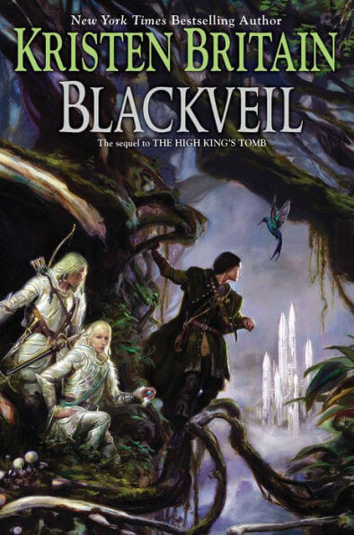
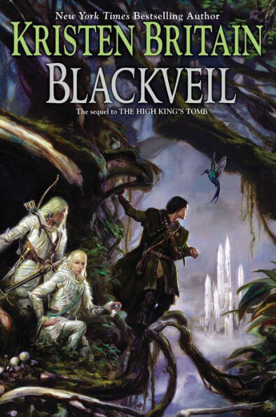
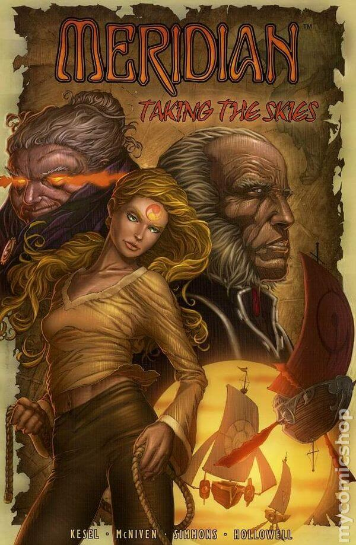

My Personal Library
Not as big as it once was, but mine and well loved! Because I've moved every few years my whole life, I try to keep only the books I know that I love or will reread or might want to loan out to trusted friends. There's still a little part of me that dreams of having a library room with shelves covered in books, but for now I'm happy with my tiny library~
Someday I'd like to take pictures of the covers in my personal collection or maybe the spines! But moving uncertainty has them all in boxes right now, so we'll keep that thought for later. ;)fiction
 

poetry
nonfiction
comics
